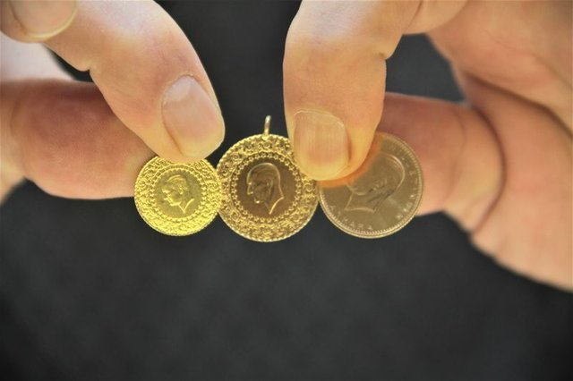
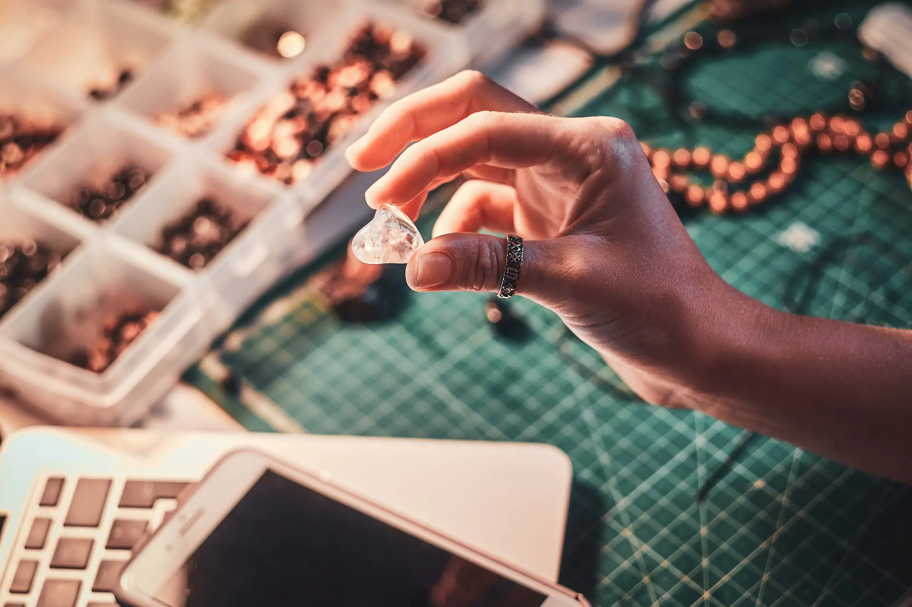
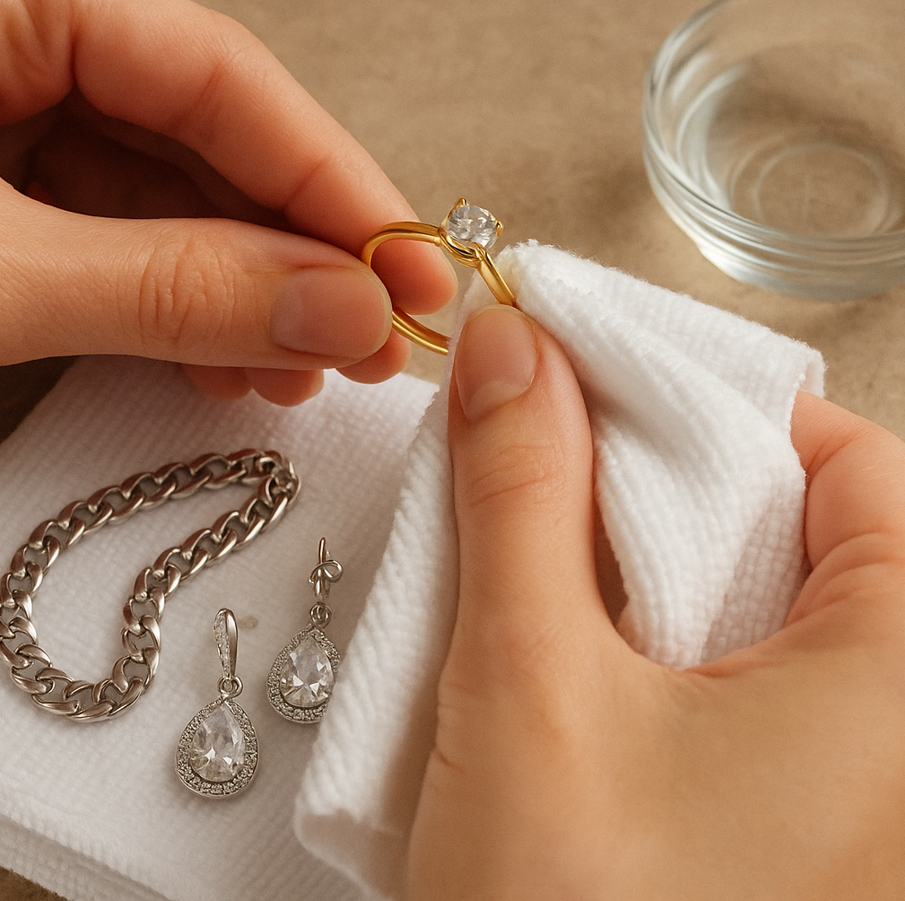

Altın Ayarı (Karat) Nedir? 14, 18 ve 22 Ayar Arasındaki Fark
Altın alırken sıkça duyduğumuz ayar (karat) kavramı, altının saflık derecesini ifade eder. 24 ayar (999 milyem) %100 saf altını temsil eder ve genellikle işlenemeyecek kadar yumuşak olduğu için yatırımlık (külçe, gram) olarak kullanılır.
22 Ayar: %91.6 saflıkta altındır. Geri kalanı bakır, gümüş gibi metallerle karıştırılarak dayanıklılığı artırılır. Özellikle işçiliği yoğun bileziklerde tercih edilir.
14 Ayar: %58.5 saflıkta altındır. İçerdiği diğer metaller sayesinde çok daha dayanıklı ve çizilmelere karşı dirençlidir. Bu nedenle pırlanta yüzükler, kolyeler ve günlük kullanım takıları için en ideal ve en yaygın kullanılan ayardır.
18 Ayar: %75 saflıkta altındır. Lüks mücevherat segmentinde yer alır, 14 ayara göre daha parlak bir sarı renge sahiptir ancak biraz daha yumuşaktır.

Pırlanta Seçerken Nelere Dikkat Edilmeli? (4C Kuralı)
Pırlanta bir mücevherin kalbidir. Değerini belirleyen 4 temel faktör (4C) vardır:
1. Kesim (Cut): Pırlantanın ışıltısını ve parlaklığını belirleyen en önemli faktördür. İdeal bir kesim, ışığı taşın içinde mükemmel bir şekilde yansıtır. "Excellent" veya "Very Good" kesimler tercih edilmelidir.
2. Renk (Color): Pırlantalar D (en beyaz/renksiz) harfinden Z'ye (sarımtırak) doğru sıralanır. D, E, F renkleri en değerli olanlardır. G ve H ise hem daha ulaşılabilir hem de çıplak gözle beyaz görünen popüler seçeneklerdir.
3. Berraklık (Clarity): Taşın içindeki doğal "iz" miktarını belirtir. IF (lekesiz) en nadiridir. VS (Very Slightly Included) ve SI (Slightly Included) kategorileri, gözle görülür bir iz barındırmayan ve fiyat/performans açısından ideal olan seçeneklerdir.
4. Karat (Carat): Pırlantanın ağırlığını, dolayısıyla büyüklüğünü ifade eder. Fiyat, karat arttıkça katlanarak yükselir.

Altın Mücevher ve Alyans Bakımı Nasıl Yapılır?
Değerli mücevherlerinizin ilk günkü parlaklığını koruması için düzenli bakım şarttır. Evde uygulayabileceğiniz basit ve etkili yöntemler şunlardır:
Ilık su dolu bir kâsenin içine birkaç damla yumuşak bir bulaşık deterjanı ekleyin. Mücevherlerinizi bu karışımda 15-20 dakika bekletin. Bu süre, krem, losyon ve günlük kirlerin çözülmesini sağlayacaktır.
Bekleme süresi sonunda, yumuşak kıllı (bebekler için olanlar idealdir) bir diş fırçası yardımıyla taşların etrafını ve metalin girintilerini nazikçe fırçalayın. Ardından temiz ılık suyla durulayın ve tüy bırakmayan yumuşak bir bezle kurulayın.
Uyarı: Klorlu su (havuz), çamaşır suyu ve sert kimyasallar altının yapısına zarar verebilir. Temizlik yaparken veya havuza girerken mücevherlerinizi çıkarmanız ömürlerini uzatır.